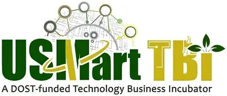

USMart TBI
University of Southern Mindanao · Region XII
USMart TBI is the Technology Business Incubator (TBI) of the University of Southern Mindanao (USM) in Kabacan, North Cotabato, funded by DOST-PCIEERD as part of the national TBI network. The center supports student and early-stage startup teams working in the agri-food sector — aligning with USM's strengths in agriculture, applied sciences, and research in Central Mindanao.
- Category
- Technology Business Incubator
- Host institution
- University of Southern Mindanao
- City
- Kabacan, Cotabato
- Region
- Region XII
- Operating status
- Operating
About the Center
As a DOST-accredited TBI embedded within one of the region's leading state universities, USMart TBI connects technopreneurs with the resources of USM's research infrastructure, technical expertise, and industry networks across the SOCCSKSARGEN and Bangsamoro regions. The incubator supports innovation-driven ventures from ideation through prototype, helping startups access commercialization pathways via DOST funding programs and technology transfer.
The "USMart" brand reflects the center's aspiration to develop smart and globally competitive innovations rooted in Southern Mindanao's agricultural and environmental contexts.
Programs & Services
- Startup Incubation — Physical and virtual incubation spaces for DOST-evaluated startups with HEIRIT focus areas
- Mentoring & Business Development — Expert coaching on business modeling, financial planning, market validation, and strategic growth
- Technology Prototyping — Technical support for developing and refining product and process innovations
- IP & Legal Guidance — Assistance with intellectual property registration, licensing, and commercialization
- DOST Funding Access — Facilitation of DOST-PCIEERD grants, voucher programs, and technology commercialization funds for incubatees
- Demo Days & Pitch Events — Showcasing incubatee innovations to investors, industry partners, and government stakeholders
- USM Research Linkages — Access to USM's laboratories, research centers, and academic experts to support technical development
Contact
Sources & references
- usm.edu.ph/usmart-tbi
- usm.edu.ph/usm-among-3-5-of-philippine-heis-with-technology-business-incuba…
- pcieerd.dost.gov.ph/e-forms/498-call-for-proposals-for-the-pcieerd-heirit-h…
Details are drawn from public records and the sources above, July 2026.
Startupreneur Innovation Hub · synced from the Notion catalog (July 2026) · status: published.